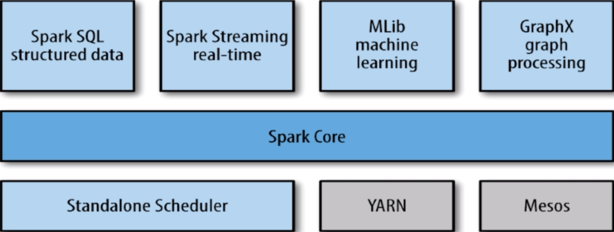
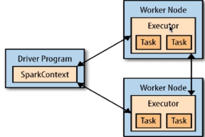
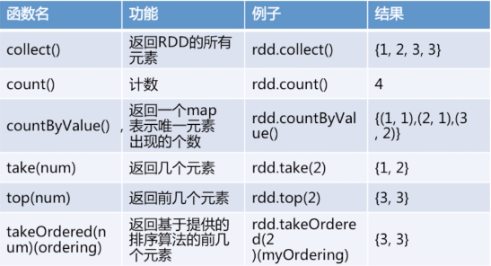
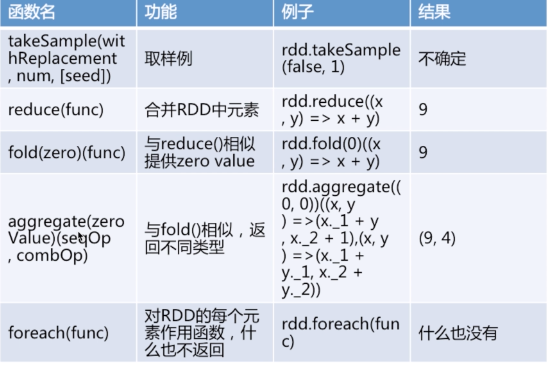
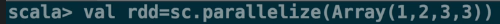
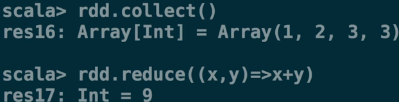
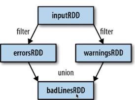
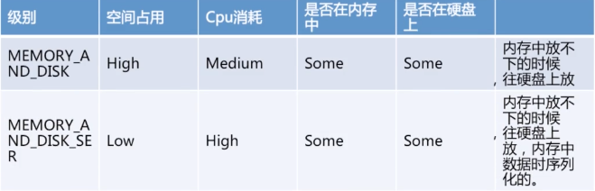

Spark简介
Spark是什么
Spark是一个快读且通用的集群计算平台
Spark的特点
Spark应用程序可以使用R语言、Java、Scala和Python进行编写，极少使用R语言编写Spark程序，Java和Scala语言编写的Spark程序的执行效率是相同的，但Java语言写的代码量多，Scala简洁优雅，但可读性不如Java，Python语言编写的Spark程序的执行效率不如Java和Scala。
Spark是快速的
- Spark扩充了流行的MapReduce计算模型
- Spark是基于内存的计算
Spark是通用的
- Spark的设计容纳了其他分布式系统拥有的功能
- 批处理，迭代式计算，交互查询和流处理等
- 优点：降低了维护成本
Spark是高度开放的
- Spark提供了Python，Java，Scala，Sql的API和丰富的内置库。
- Spark和其他的大数据工具整合的很好，包括hadoop，kafka等
Spark有4中运行模式
- local模式，适用于测试
- standalone，并非是单节点，而是使用spark自带的资源调度框架
- yarn，最流行的方式，使用yarn集群调度资源
- mesos，国外使用的多
Spark生态
Spark历史
Spark是美国加州大学伯克利分校的AMP实验室（主要创始人lester和Matei）开发的通用的大数据处理框架。
Spark的组件
Spark包括多个紧密集成的组件：

Spark Core：
包含Spark的基本功能，包含任务调度，内存管理，容错机制等。
内部定义了RDDs（弹性分布式数据集）。
提供了很多APIs来创建和操作这些RDDs。
应用场景:为其他组件提供底层的服务。
Spark SQL：
是Spark处理结构化数据的库，就像Hive SQL，MySQL一样。
应用场景:企业中用来做报表统计
Spark Streaming：
是实时数据流处理组件，类似Storm。
Spark Streaming提供了API来操作实时流数据。
应用场景:企业中用来从kafka接受数据做实时统计。
Milb：
一个包含通用机器学习功能的包，Machine learning lib
包含分类，聚类，回归等，还包括模型评估，和数据导入
MLlib提供的上面的这些方法，都支持集群上的横向扩展
平常我们做机器学习用Python较多，Python最大的缺点是在单机上的，它处理的数据是有限的，而Milb是基于集群的
应用场景，机器学习
Graphx：
是处理图的库（例如，社交网络图），并进行图的并行计算。
像Spark Streaming，Spark SQL一样，它也继承了RDD API。
它提供了各种图的操作，和常用的图算法，例如PageRank算法。
应用场景，图计算。
Cluster Managers：
就是集群管理，Spark自带一个集群管理是单独调度器。
常见集群管理包括Hadoop YARN，Apache Mesos
紧密继承的优点：
- Spark底层优化了，基于Spark底层的组件，也得到了相应的优化。
- 紧密集成，节省了各个组件结合使用时的部署，测试等时间。
- 向Spark增加新的组件时，其他组件，可立即享用新组建的功能
Spark与Hadoop的比较
Hadoop的应用场景
离线处理
Hadoop在处理数据的时候它的中间数据会落到硬盘上，因此导致Hadoop处理大量数据时时效性不是很高。
Hadoop任务的执行时间是几分钟到几小时不等
对时效性要求不高
Spark应用场景
时效性要求高的场景
因为Spark是基于内存的，它的中间数据尽量不落在磁盘上，尽量落在内存中，这样就大大加快了Spark的运算速度
Spark的计算时间一般是几秒钟到几分钟
机器学习等领域
- 这是一整个生态系统，每个组件都有其作用，各善其职即可
- Spark不具有HDFS的存储能力，要借助HDFS等持久化数据
- 大数据将会孕育出更多的新技术
RDDs介绍
Driver program：
包含程序的main（）方法，RDDs的定义和操作。
它管理很多节点，我们称作executors

SparkContext：
Driver programs通过SparkContext对象访问Spark。
SparkContext对象代表和一个集群的连接。
在Shell中SparkContext自动创建好了，就是sc。
RDDs：
Resilient distributed datasets（弹性分布式数据集，简写RDDs）
这些RDDs，并行的分布在整个集群中
RDDs是Spark分发数据和计算的基础抽象类。
一个RDD是一个不可改变的分布式集合对象
Spark中，所有的计算都是通过RDDs的创建，转换，操作完成的。
一个RDD内部由许多partitions（分片）组成。
分片：
每个分片包括一部分数据，partitions可在集群不同节点上计算
分片是Spark并行处理的单元，Spark顺序的，并行的处理分片
RDDs的创建方法：
把一个存在的集合传给SparkContext的parallelize()方法，测试用
val rdd = sc.parallelize(Array(1,2,2,4),4)
第一个参数：待并行化处理的集合，第二个参数：分区个数
加载外部数据集。
val rddText = sc.textFile("helloSpark.txt")
Scala的基础知识
Scala的变量声明：
在Scala中创建变量的时候，必须使用val或者var
val，变量值不可修改，一旦分配不能重新指向别的值
var，分配后，可以指向类型相同的值
Scala的匿名函数和类型推断：
lines.filter(line=>line.contains("world"))
定义一个匿名函数，接受一个参数line，
使用line这个String类型变量上的contains方法，并且返回结果。
line的类型不需指定，能够推断出来。
RDD基本操作之Transformation
Transformation介绍：
Transformations（转换）
从之前的RDD构建一个新的RDD，像map()和filter().
map():
map()接受函数，把函数应用到RDD的每一个元素，返回新RDD。
filter():
filter()接受函数，返回只包含满足filter()函数的元素的新RDD。
flatMap():
对每个输入元素，输出多个输出元素。
flat压扁的意思，将RDD中元素压扁后返回一个新的RDD.
RDD基本操作之Action
Action介绍：
在RDD上计算出来一个结果。
把结果返回给driver program或保存在文件系统，count(),save


常用函数举例：
reduce()
接收一个函数，作用在RDD两个类型相同的元素上，返回新元素。
可以实现，RDD中元素的累加，计数，和其他类型的聚集操作。


Collect()：
遍历整个RDD，向driver program返回RDD的内容
需要单机内存能够容纳下（因为数据要拷贝给driver，测试使用）
大数据的时候，使用savaAsTextFile() action等。
take(n)：
返回RDD的n个元素（同时尝试访问最少的partitions）
返回结果是无序的，测试使用
top()：
排序（根据RDD中数据的比较器）
foreach()：
计算RDD中的每个元素，但不返回到本地。
可以配合println()友好的打印出数据。
RDDs的特性
RDDs的血统关系图：

Spark维护者RDDs之间的依赖关系和创建关系，叫做血统关系图
Spark使用血统关系图来计算每个RDD的需求和恢复丢失的数据
延迟计算（Lazy Evaluation）：
Spark对RDDs的计算是，他们第一次使用action操作的时候
这种方式在处理大数据的时候特别有用，可以减少数据的传输
Spark内部记录metadata表名transformations操作已经被响应了
加载数据也是延迟计算，数据只有在必要的时候，才会被加载进去
RDD.persist():
默认每次在RDDs上面进行action操作时，Spark都重新计算RDDs
如果想重复利用一个RDD，可以使用RDD.persist()
unpersist()方法从缓存中移除
例子-peisist()

